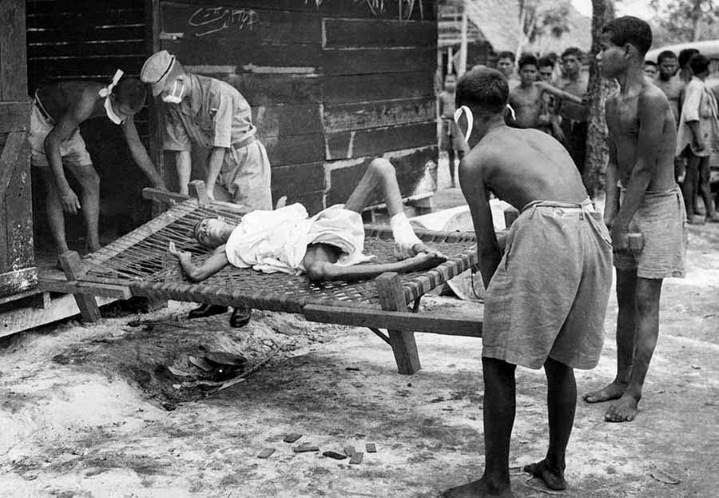
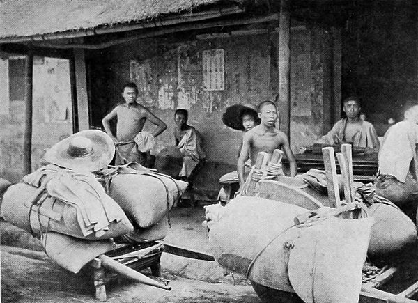

Melawan Penjajah
Sebelum Peemerintah Kolonial Belanda ditaklukan oleh Jepang, pada 8 Maret 1942 tanpa syarat, Jepang secara terus menerus mengadakan Propaganda terhadap Indonesia. Radio Tokyo terus menerus mem – Propaganda apa yang disebut cita – cita “Kemakmuran Bersama Asia Timur Raya” yang dimulai dan ditutup dengan lagu Indonesia Raya.

Melanjutkan Perjuangan
Maka untuk merealisasikan janji-janji jepang maka oleh pemerintah pendudukan jepang dibentuk majelis undang-undang dasar .Majelis ini ini oleh prof.Mr Muh Yamin disebut Konsituantepertama dibuat di Indonesia.